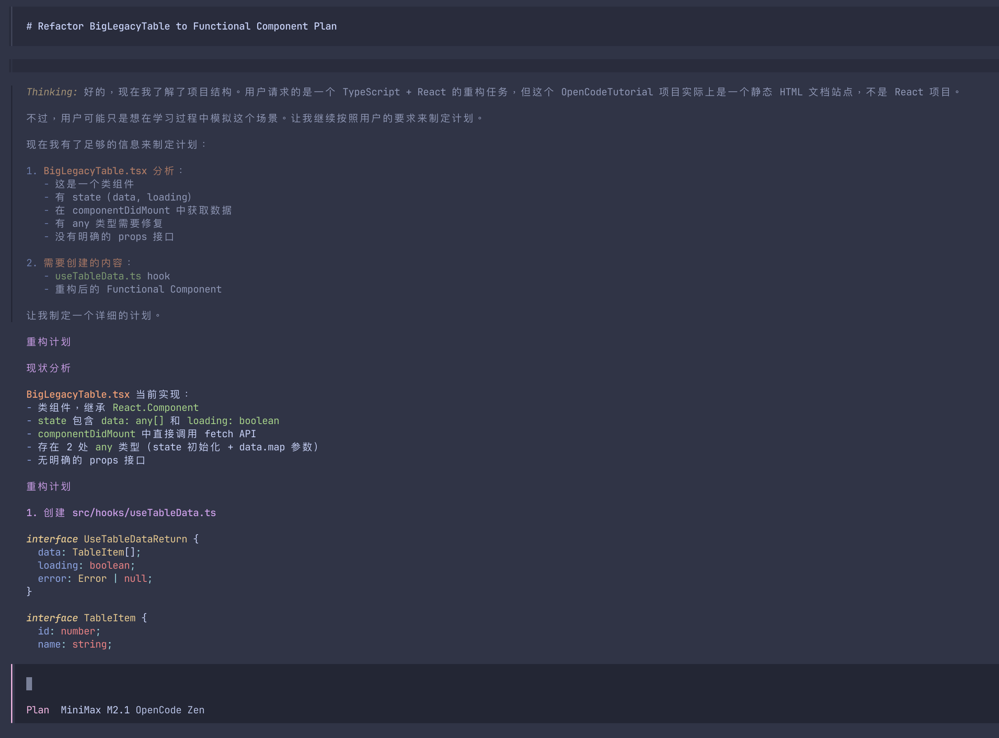

第六章：实战工作流 —— 像专家一样提问
学会了配置，接下来就是如何使用。这里有三个最典型的开发者场景，展示如何通过精准的 Prompt 让 OpenCode 为你工作。
场景一：重构遗留代码 (Refactor)
将一个巨大的 React Class Component 重构为 Functional Component，并拆分出 hooks。
假设我们有一个老旧的组件 BigLegacyTable.tsx，充斥着
any 类型和生命周期逻辑：
import React from 'react';
class BigLegacyTable extends React.Component {
state = {
data: [],
loading: true
};
componentDidMount() {
fetch('/api/data').then(res => res.json()).then(data => {
this.setState({ data, loading: false });
});
}
render() {
const { data, loading } = this.state;
if (loading) return <div>Loading...</div>;
return (
<table>
{data.map((item: any) => (
<tr key={item.id}><td>{item.name}</td></tr>
))}
</table>
);
}
}
export default BigLegacyTable;步骤 1: 投喂上下文
不要直接说“重构这个文件”。先告诉它你的重构标准。
User Prompt:
@src/components/BigLegacyTable.tsx
我要把这个组件重构为 Functional Component。
要求：
1. 把数据获取逻辑拆分到 @src/hooks/useTableData.ts 中。
2. 使用 TypeScript 严格模式，补全所有 any 类型。
3. 保持原有的 props 接口不变。
先给我一个 Plan。

OpenCode 输出的详细执行计划 (Plan)
步骤 2: 执行与验证
确认 Plan 无误后，切换到 Build 模式执行。完成后，要求它运行检查。
User Prompt:
看起来不错，开始执行。
完成后，请运行 `npm run lint` 确保没有引入新的 lint 错误。
场景二：编写单元测试 (TDD)
OpenCode 非常擅长写测试，尤其是当你给了它用例范本时。
User Prompt:
@src/utils/currencyFormatter.ts
请为这个文件编写 Jest 测试用例。
参考 @src/utils/__tests__/dateFormatter.test.ts 的写法。
需要覆盖以下边缘情况：
- 输入为 null 或 undefined
- 输入为负数
- 大数精度问题
写完后直接运行 `npm test` 验证。
场景三：排查诡异 Bug (Debug)
当遇到报错时，直接把错误日志甩给它，并配合相关文件。
User Prompt:
@src/api/user.ts @server/logs/error.log
我看日志里一直报 "Cannot read property 'id' of undefined"。
但这只在用户未登录时发生。
请分析原因，并修复这个问题。修复时请加一个非空判断守卫。
场景四：排查“为什么配置没生效？”
这是很多新手真正最常遇到的问题。比起继续猜，不如让 OpenCode 直接帮你检查配置优先级和最终结果。
User Prompt:
@opencode.json @.opencode/agents @AGENTS.md
我修改了项目配置，但效果和预期不一致。
请先帮我分析可能是哪些配置源在互相覆盖。
如果需要，请告诉我应该运行什么命令验证。
优先检查 model、permission、plugin 和 mcp 配置。
这类问题很适合先让它做只读分析，然后你再手动执行
opencode debug config 验证。
场景五：给团队创建一个自定义命令
很多团队会反复做同一件事，比如“评审最近改动”“发布前检查”“跑测试并总结失败原因”。这时最适合让 OpenCode 帮你创建 command。
User Prompt:
请帮我在 .opencode/commands/ 下创建一个 review-changes.md。
目标：输入 /review-changes 后，自动读取最近 10 条 git log，
再生成一份代码评审意见，重点关注风险、回归和缺少测试的地方。
默认使用 plan agent。
这个场景非常适合新手，因为它能把“今天学会的一次 Prompt”沉淀成“以后每天都能复用的命令”。